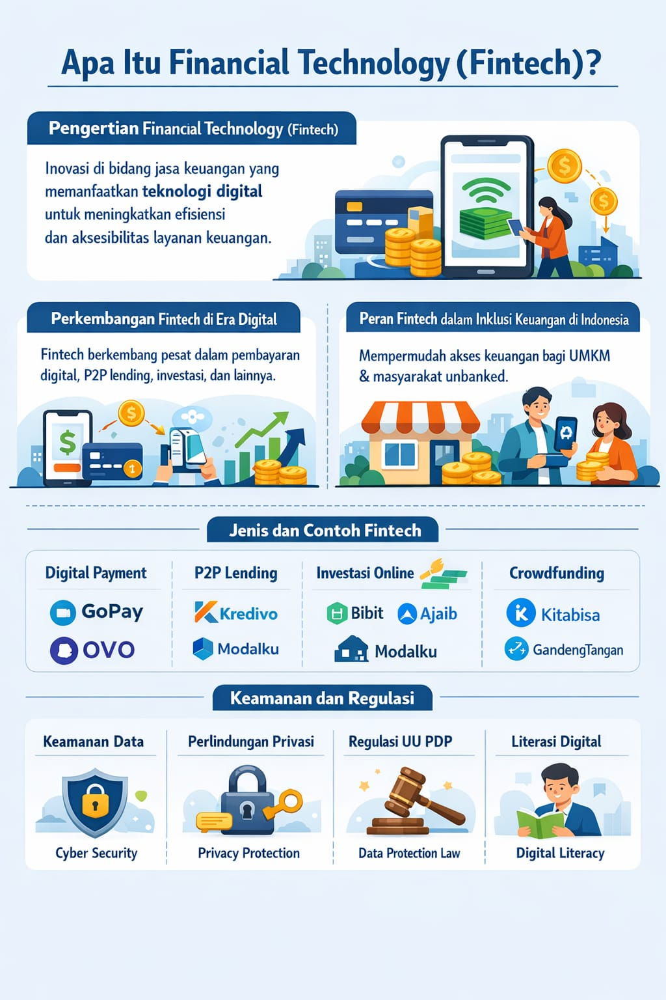

MEDIA PEMBELAJARAN
Eksplorasi Konten Interaktif
Pengetahuan tak selalu datang dengan suara keras.
Kadang ia menyusup pelan, lalu tinggal lama di kepala.
📎 Modul Pembelajaran Digital
Dokumen utama yang merangkum inti materi secara sistematis dan mudah dipahami.
Keamanan Data Digital
Referensi utama • Google Docs • PDF
🎥 Video Interaktif
Visualisasi konsep agar materi lebih terasa nyata dan kontekstual.
Ancaman Data di Era Digital
Dasar & realita lapangan
Point penting Financial Technology
Praktik & kebiasaan aman
📊 Infografis Ringkasan
Gambaran visual singkat untuk menangkap inti pembahasan dalam sekali pandang.

Alur data, risiko, dan langkah mitigasi dalam ekosistem digital